Ministero dell’Istruzione, dell’Università e della Ricerca
L I C E O S T A T A L E “G a l i l e o G a l i l e i”
Liceo Scientifico - Liceo Linguistico
Via S. Francesco n. 63 - 24043 CARAVAGGIO (BG)
_ 0363/50547 – 0363/54400- fax 0363/54371
Cod. fisc. 93000700166 – e-mail: segreteria@liceogalilei.it
p.e.c.bgps04000r@pec.istruzione.it
Anno scolastico 2015-2016
Approfondimento interdisciplinare per il Colloquio dell’Esame di Stato
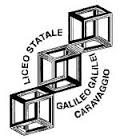
L'uomo che scambiò
sua moglie per un cappello
Centonze Marco
Classe 5^B
Liceo Scientifico
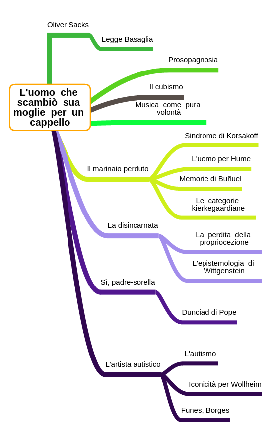
Oliver Sacks

“Il medico, a differenza del
naturalista, ha a che fare con
un singolo organismo,
il soggetto umano, in lotta per
conservare la propria identità
in circostanze avverse.”
Oliver Sacks
“Mi sento infatti medico e naturalista al tempo stesso; mi
interessano in pari misura le malattie e le persone; e forse
anche sono insieme, benché in modo insoddisfacente,
un teorico e un drammaturgo, sono attratto dall'aspetto
romanzesco non meno che da quello scientifico, e li vedo
continuamente entrambi nella condizione umana,
non ultima in quella che è la condizione umana per eccellenza,
la malattia: gli animali si ammalano, ma solo l'uomo cade
radicalmente in preda alla malattia.”
Franco Basaglia
"Non è importante tanto il
fatto che in futuro ci siano o
meno manicomi e cliniche
chiuse, è importante che noi
adesso abbiamo provato che
si può fare diversamente,
ora sappiamo che c'è un altro
modo di affrontare
la questione;
anche senza la costrizione."
L'uomo che scambiò sua
moglie per un cappello
moglie per un cappello
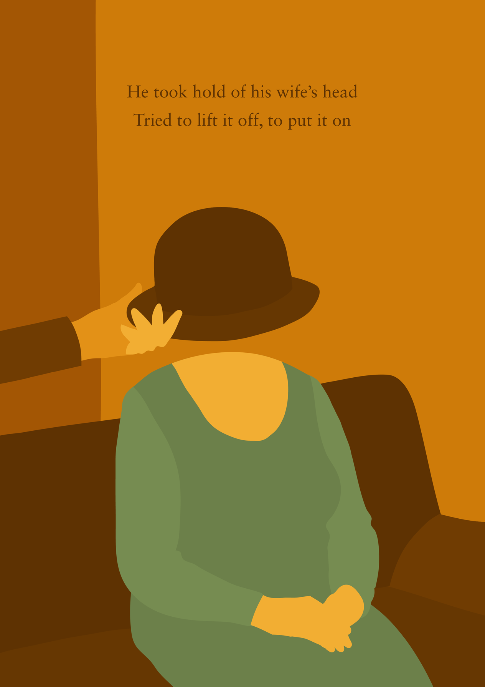
Prosopagnosia:
deficit percettivo acquisito o
congenito del sistema nervoso
centrale che impedisce ai
soggetti che ne vengono
colpiti di riconoscere i tratti di
insieme dei volti delle persone
L'uomo che scambiò sua
moglie per un cappello
moglie per un cappello
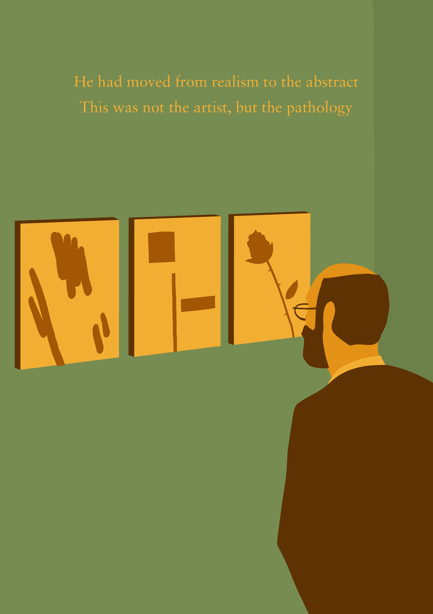
“Oh dottori, siete i soliti filistei!
Non vedete l'evoluzione artistica?”
Cubismo
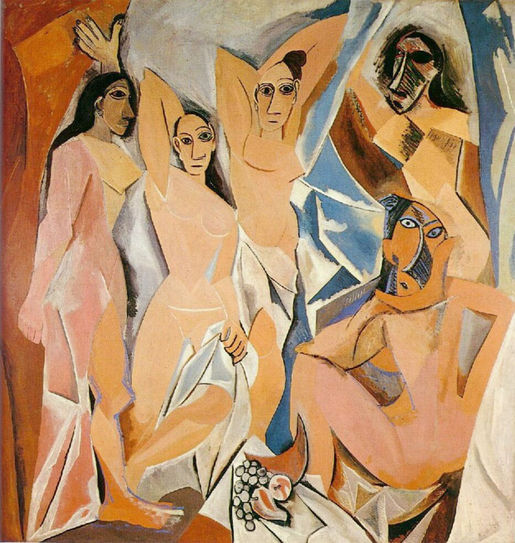
Les Demoiselles d'Avignon, Pablo Picasso
Schopenhauer
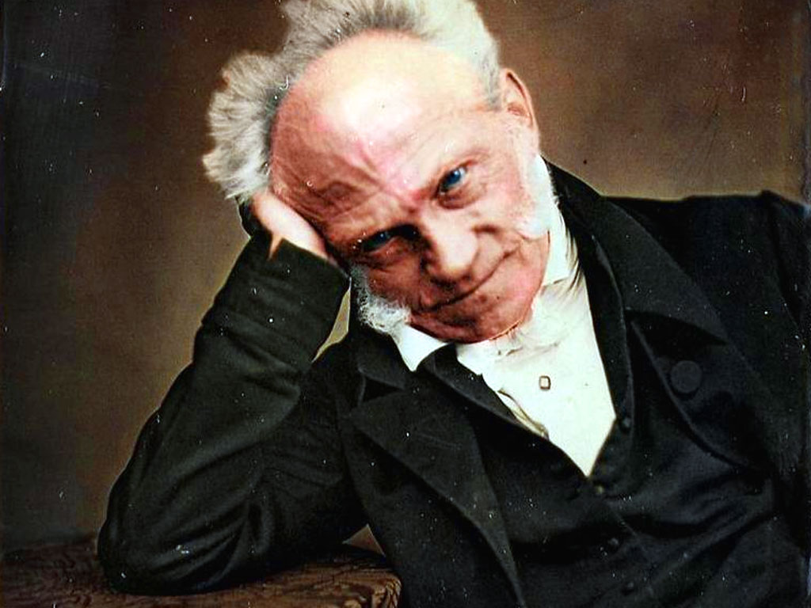
"[La musica] esprime,
con un linguaggio
universalissimo,
l’intima essenza,
l’in sé del mondo,
che noi, partendo
dalla sua piú limpida
manifestazione,
pensiamo attraverso
il concetto di volontà,
e l’esprime in una materia
particolare, cioè con semplici suoni
e con la massima determinatezza e verità"
con un linguaggio
universalissimo,
l’intima essenza,
l’in sé del mondo,
che noi, partendo
dalla sua piú limpida
manifestazione,
pensiamo attraverso
il concetto di volontà,
e l’esprime in una materia
particolare, cioè con semplici suoni
e con la massima determinatezza e verità"
Il marinaio perduto
Si deve incominciare a perdere la memoria, anche solo
brandelli di ricordi, per capire che in essa consiste la nostra vita.
Senza memoria la vita non è vita… La nostra memoria è la nostra
coerenza, la nostra ragione, il nostro sentimento, persino il
nostro agire. Senza di essa non siamo nulla…
(Non mi resta che aspettare l'amnesia finale, quella che può
cancellare una vita intera, come fu per mia madre…)
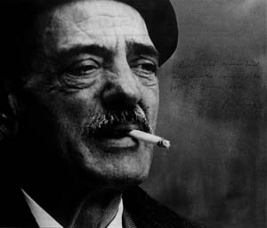
Luis Buñuel
Il marinaio perduto
“Come sarebbe? Nel '45!”
“E lei, Jimmie, quanti anni ha?”
“Be', ecco, diciannove.
Farò i venti fra qualche mese”
Sindrome di Korsakoff
David Hume
“Oso affermare che
altro non siamo
se non un fascio
o un accumulo
di sensazioni diverse, che si
susseguono con
inimmaginabile
rapidità, e sono
in perpetuo
flusso e movimento.”
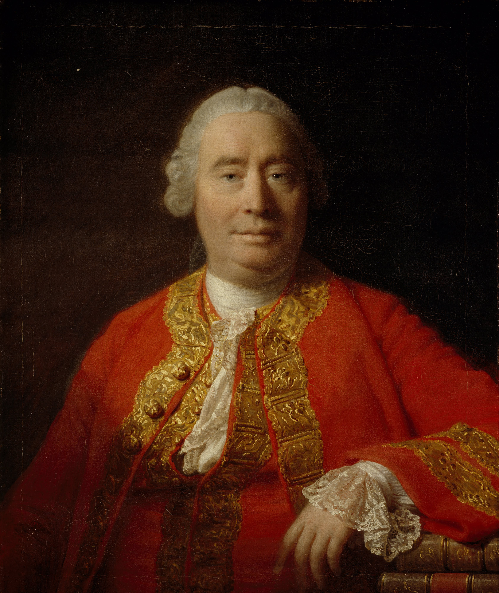
Il marinaio perduto
“Pensate che ce l'abbia, un'anima?”
“Osservi Jimmie nella cappella, e giudichi lei stesso.”
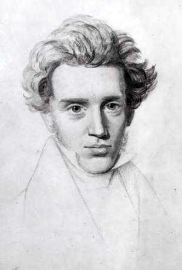
Modalità esistenziali
per Kierkegaard
‣ via estetica
‣ via etica
‣ via religiosa
‣ via etica
‣ via religiosa
Wittgenstein
“Gli aspetti di cose per noi
importantissime sono nascosti a
causa della loro semplicità e
familiarità. (Si è incapaci di notare
qualcosa perché la si ha sempre
davanti agli occhi). I veri
fondamenti di un'indagine non
colpiscono affatto l'uomo
che la compie.”
propriocezione:
la capacità di percepire e riconoscere
la posizione del proprio corpo nello spazio
la posizione del proprio corpo nello spazio
“È successo qualcosa di spaventoso”
“Non mi sento più il corpo. Mi sento strana,
disincarnata"
“È come se mi fosse stato tolto qualcosa dentro,
proprio nel centro. Sono stata svuotata.”
Sì, padre-sorella
“Sì, padre”
“Sì, sorella”
“Sì, dottore”
“Sì, sorella”
“Sì, dottore”
“Insomma, che cosa sono io?”
"Vedo la sua faccia,
la sua barba, e penso
ad un sacerdote.
Vedo la sua uniforme bianca,
e penso alle infermiere.
Vedo il suo stetoscopio,
e penso a un dottore.”
la sua barba, e penso
ad un sacerdote.
Vedo la sua uniforme bianca,
e penso alle infermiere.
Vedo il suo stetoscopio,
e penso a un dottore.”
Sì, padre-sorella
“Ma lei sa la differenza tra
un prete, una sorella e un dottore?”
un prete, una sorella e un dottore?”
“Conosco la differenza,
ma per me non significa nulla.
Prete, sorella, dottore... e allora?”
ma per me non significa nulla.
Prete, sorella, dottore... e allora?”
“Si potrebbe dire sono enantiomeri.
Ma per me non significano nulla.
Per me non c'è nessuna differenza.
Nulla significa qualcosa, per me.”
Ma per me non significano nulla.
Per me non c'è nessuna differenza.
Nulla significa qualcosa, per me.”
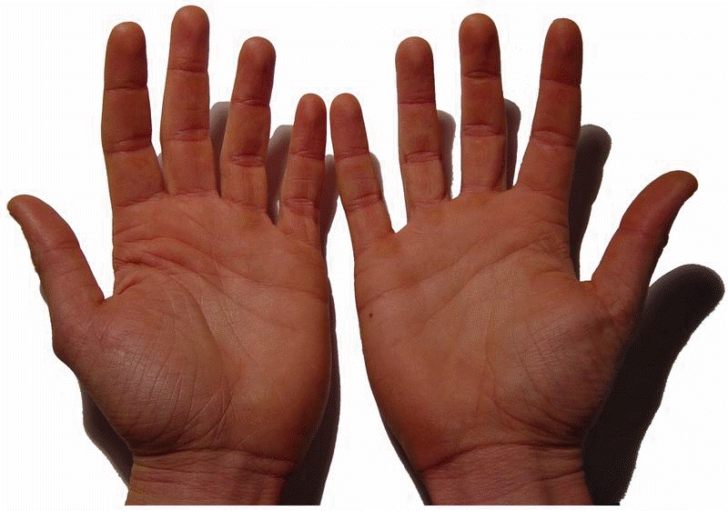
The Dunciad
Thy hand, great Anarch!
lets the curtain fall;
And universal Darkness
buries all.
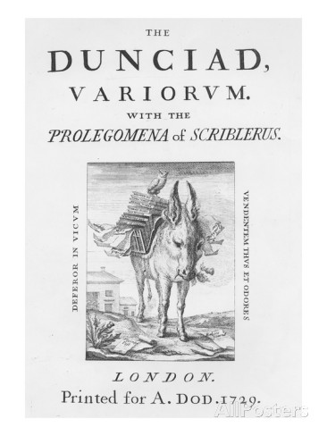
L'artista autistico
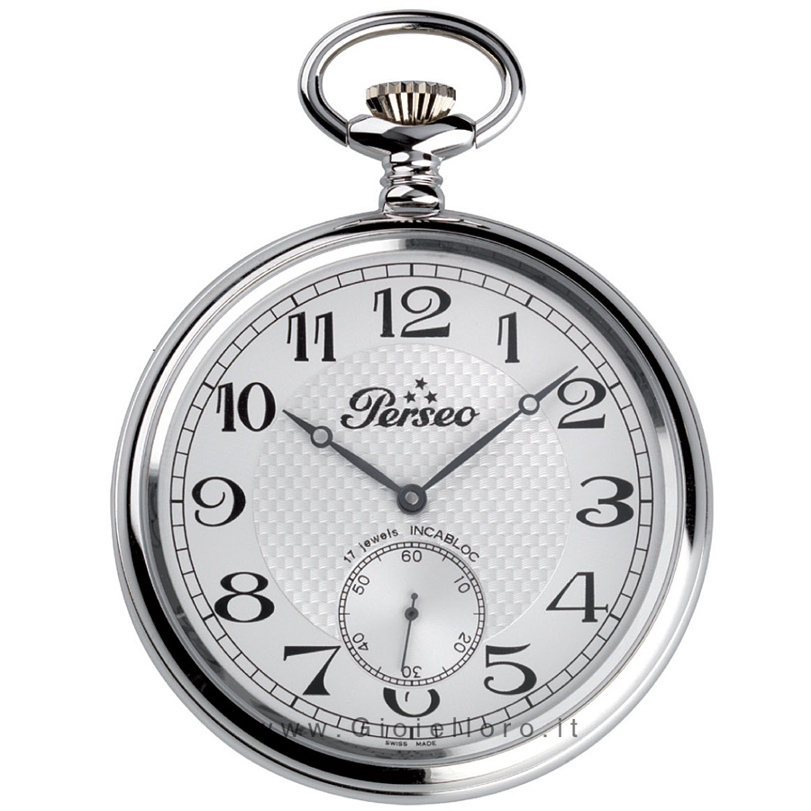
"È solo un'idiota."
L'artista autistico
“E' solo una Xerox”
Iconicità
per Wollheim
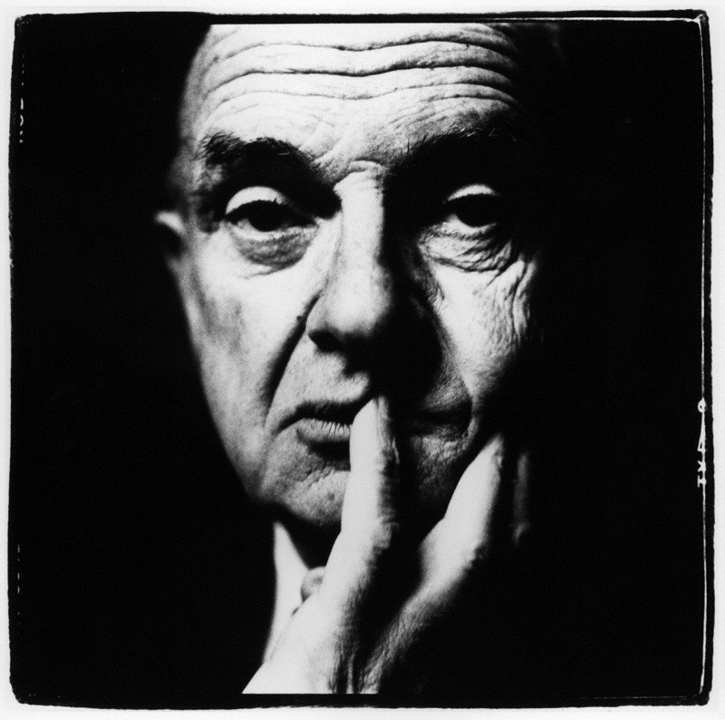
‣Soggettività
‣Intenzionalità
‣Drammatizzazione
‣Intenzionalità
‣Drammatizzazione
Funes
Borges
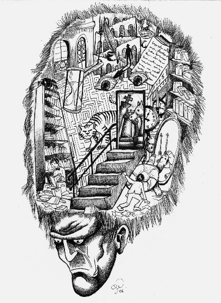
“Questi, non dimentichiamolo, era
quasi incapace di idee generali,
platoniche... nessuno... hai mai
sentito il calore e la pressione
d'una realtà così intangibile
come quella che giorno e notte
convergeva sul felice Ireneo...
Nel mondo sovraccarico di Funes
non c'erano che dettagli,
quasi immediati.”
L'artista autistico
Avrebbe potuto fare tutto questo
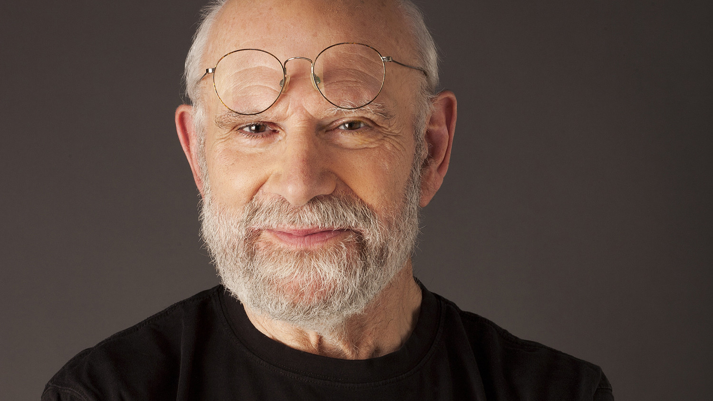
ma non avrebbe
fatto nulla,
se non avesse
incontrato
una persona
capace di
instradarlo
verso la sua
vocazione
fatto nulla,
se non avesse
incontrato
una persona
capace di
instradarlo
verso la sua
vocazione
Bibliografia e
sitografia:
sitografia: